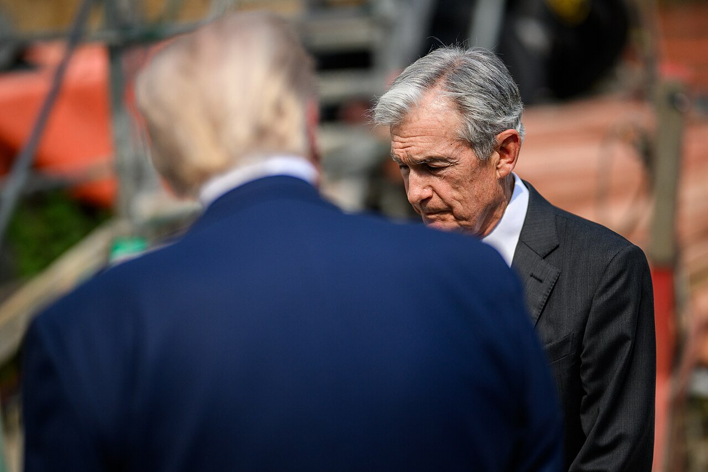
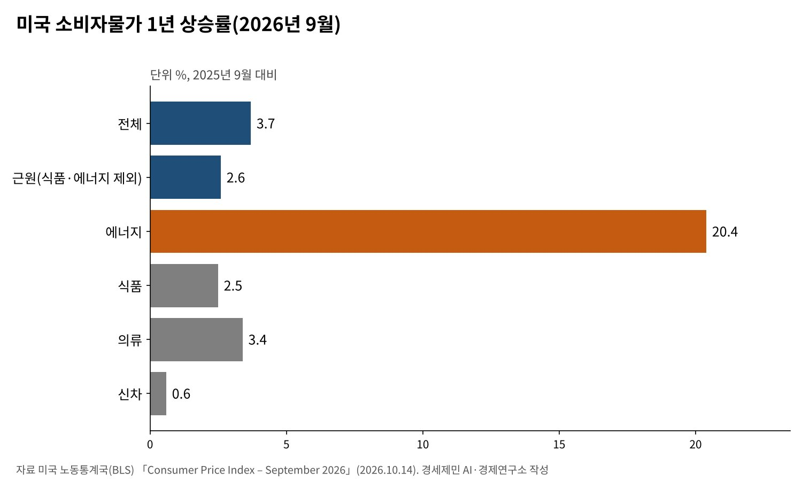
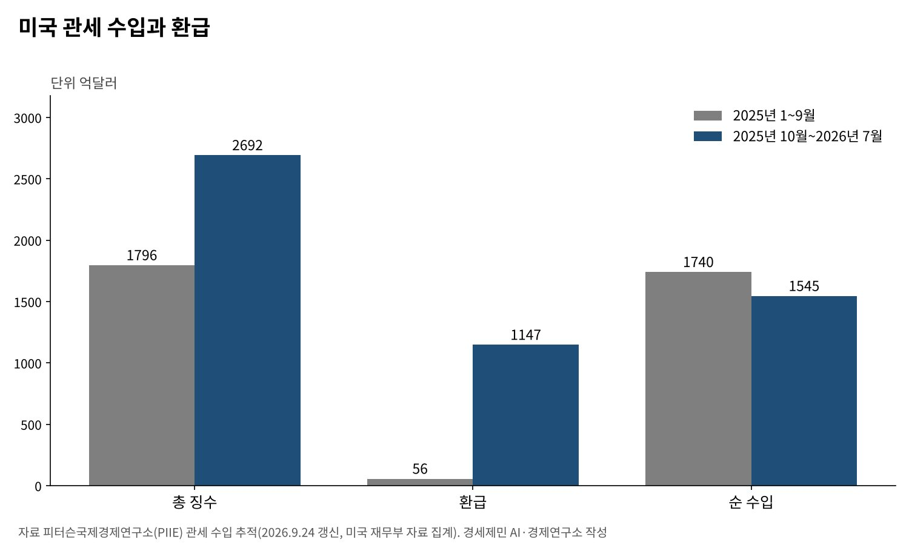

[트럼프 관세전쟁①] 트럼프 관세압박, 미국이라고 다 유리할까
대법원은 상호관세를 무효로 했고, 관세는 무역법 122조와 301조로 옮겨 탔다
연준 연구, 관세 비용은 약 7개월 만에 거의 다 수입 가격에 실려
미국 9월 물가 3.7% 오르고 연준은 금리를 다시 올렸다
AI경제저널=김갑봉 기자 | 관세전쟁이 시작된 지 한 해 반이 지났다. 2025년 7월 이 글의 첫 질문은 「미국이라고 다 유리할까」였다. 그사이 미국 대법원은 상호관세의 법적 근거를 지웠다. 관세는 다른 법조문을 빌려 다시 섰다.
미국 노동통계국 자료를 보면 9월 소비자물가는 1년 전보다 3.7% 올랐다. 연방준비제도(연준)는 9월 16일 기준금리를 0.25%포인트 올려 연 3.75~4%로 했다. 관세를 매긴 쪽의 물가와 금리도 함께 움직였다.
미국 정부와 연준, 국제 연구기관의 원문으로 따져 본다. 관세 비용은 누가 냈는지, 미국이 얻은 것과 잃은 것은 무엇인지 살핀다.
대법원 6대3, 「비상경제권한법은 관세 권한이 아니다」
미국 대법원은 2026년 2월 20일 러닝리소시스 대 트럼프 사건을 6대3으로 판결했다. 국제비상경제권한법(IEEPA)은 대통령에게 관세를 매길 권한을 주지 않는다고 봤다. 이 법에 기댄 상호관세가 효력을 잃었다.

정부는 곧바로 다른 법을 꺼냈다. 1974년 무역법 122조에 따라 2월 24일부터 거의 모든 수입품에 10% 관세를 매겼다. 이 조항은 최장 150일만 쓸 수 있다. 의회가 연장하지 않아 7월 24일 끝났다.
같은 날 무역법 301조 관세가 그 자리를 채웠다. 미국 무역대표부(USTR)는 강제노동 상품 수입을 막지 않았다는 이유로 60개 경제권에 10% 또는 12.5% 관세를 매겼다. 철강·자동차처럼 232조 관세가 붙은 품목은 뺐다.
무역대표부는 3월 11일 16개 경제권의 제조업 과잉생산 조사도 시작했다. 한국·일본·유럽연합(EU)·베트남·중국이 모두 들어 있다. 한국 정부의 10월 1일 설명으로는 그 결과 발표가 남아 있다.
관세는 누가 냈나, 연구가 가리키는 곳
연준 이사회 연구진은 4월 낸 연구에서 2025년 11월까지 바뀐 관세가 2026년 2월까지 근원 상품 물가를 3.1% 올렸다고 추정했다. 근원 개인소비지출 물가로는 0.8%다. 수입 가격 전가는 약 7개월 만에 거의 100%에 이르렀다.
알베르토 카발로 등 미국 연구진은 대형 유통업체의 일별 가격을 관세율과 맞췄다. 2025년 9월까지 소매 가격 전가율은 20%였고 소비자물가를 누적 0.7%포인트 올렸다. 수입품 가격은 국산품의 약 두 배로 뛰었다.
두 연구는 결이 같다. 관세의 대부분은 미국 수입업체가 먼저 떠안는다. 수입업체와 유통업체는 마진을 줄이며 버티다 시차를 두고 소비자 가격에 싣는다. 외국 수출업체가 값을 깎아 관세를 대신 내 주지 않았다.
2018~2019년 미중 무역전쟁도 같은 결과를 남겼다. 파블로 파이겔바움 등 미국 연구진은 수입 관세가 세금 포함 가격에 모두 전가됐다고 분석했다. 미국 소비자와 수입 기업의 손실은 510억달러, 국내총생산(GDP)의 0.27%였다.

물가 3.7%, 관세만의 탓은 아니다
9월 소비자물가 3.7%를 모두 관세 탓으로 돌릴 수는 없다. 에너지 물가가 1년 새 20.4% 뛰었다. 식품과 에너지를 뺀 근원 물가는 2.6%다. 의류는 3.4%, 신차는 0.6% 올랐다.
수입 물가도 1년 새 8.1% 올랐다. 연료 수입 물가가 34.5% 뛴 몫이 크다. 연료를 뺀 수입 물가도 6.0% 올랐다. 국제통화기금(IMF)은 7월 세계경제전망에서 「세계 물가 둔화가 멈췄다」고 진단했다.
연준은 9월 성명에서 「물가가 여전히 높다」며 금리를 올렸다. 관세와 에너지는 따로 적지 않았다. 관세가 상품 물가를 밀어 올린 위에 에너지 충격이 겹쳤다. 금리를 내릴 여지는 그만큼 줄었다.
관세 수입은 늘었지만 환급이 깎았다
피터슨국제경제연구소(PIIE)의 관세 수입 집계를 보면 2025년 1~9월 관세 수입은 1796억달러다. 환급 56억달러를 빼면 1740억달러다. 2025년 10월~2026년 7월 징수액은 2692억달러로 늘었다.
같은 기간 환급이 1147억달러에 이르렀다. 대법원 판결 뒤 늘어난 상호관세 환급이 큰 몫이다. 다른 환급도 섞여 있다. 순 관세 수입은 1545억달러로 2026회계연도 연방 세입 전망의 2.8%다. 법원이 관세의 세입 효과 상당 부분을 되돌렸다.

연준 연구진은 실제로 걷힌 관세율이 발표한 관세율에 늘 못 미쳤다고 분석했다. 2025년 12월 발표 기준 실효관세율은 14.7%로 2024년보다 12.37%포인트 높았다. 실제 징수 기준 상승폭은 그보다 5.43%포인트 작았다.
수입처를 관세가 낮은 나라로 옮기고 관세 발효 전에 물건을 미리 들인 효과다. 기업은 관세를 피하는 길을 찾는다. 높은 관세를 발표하는 일과 그만큼을 걷는 일은 다르다.
상대국은 투자를 약속했고 보복은 접었다
상대국은 맞서기보다 협상을 골랐다. 일본은 5500억달러, 한국은 3500억달러 대미 투자를 약속했다. 유럽연합은 2028년까지 에너지 7500억달러 구매와 6000억달러 투자를 공동성명에 담았다.
유럽연합은 930억유로 규모 보복관세를 2025년 8월부터 미뤘다. 2026년 7월 31일에는 그 유예를 기한 없이 늘렸다. 유럽이 보복을 미룬 덕에 미국 수출품은 유럽의 보복관세를 피했다.
투자 약속이 통계로 들어오기까지는 시간이 걸린다. 연준 연구진은 2025년 미국 외국인직접투자(FDI)가 2024년과 비슷했다고 분석했다. 발표된 대형 거래는 2026~2027년에야 공식 통계에 잡힌다고 봤다.
유리함은 협상장에서, 비용은 장바구니에서
미국의 유리함은 협상장에 있었다. 큰 시장을 무기로 상대국에서 투자 약속과 시장 개방을 끌어냈다. 법원이 관세의 근거를 지운 뒤에도 각국은 약속을 거두지 않았다.
비용은 미국 안에 남았다. 연준과 대학 연구는 관세 대부분을 미국 수입업체와 소비자가 낸다고 본다. 2018년 무역전쟁을 분석한 메리 아미티 등 연구진은 2018년 말 미국 실질소득이 달마다 14억달러 줄었다고 추정했다.
경세제민 AI·경제연구소는 셋을 묻는다. 과잉생산 301조 조사는 언제 어떤 세율로 끝나는가. 상호관세 환급은 언제 다 끝나는가. 관세가 근원 물가에 주는 압력은 언제 사라지는가. 답에 따라 미국의 손익이 다시 갈린다.
관세는 상대를 협상장에 앉히는 데는 효과가 컸다. 그러나 그 값은 국경 밖이 아니라 미국 안에서 치렀다. 관세전쟁의 손익은 협상 성과표가 아니라 미국 가계의 물가와 금리로 매겨야 한다.
참고문헌
기관 자료
- 미국 대법원, Learning Resources, Inc. v. Trump(Trump v. V.O.S. Selections, Inc. 병합), 2026년 2월 20일 판결. 판결 요지는 Ropes & Gray, 「Supreme Court Strikes Down IEEPA Tariffs」, 2026년 2월과 위키백과 사건 항목으로 대조. https://www.ropesgray.com/en/insights/alerts/2026/02/supreme-court-strikes-down-ieepa-tariffs-key-takeaways-and-implications-for-importers · https://en.wikipedia.org/wiki/Learning_Resources,_Inc._v._Trump
- 미국 무역대표부(USTR), 「USTR Takes Action in Forced Labor Section 301 Investigations」, 2026년 7월 23일. https://ustr.gov/about/policy-offices/press-office/press-releases/2026/july/ustr-takes-action-forced-labor-section-301-investigations
- 미국 무역대표부, 「Notice of Actions in Section 301 Investigations … Forced Labor」, 미국 관보 91 FR 47318, 2026년 7월 28일. https://www.federalregister.gov/documents/2026/07/28/2026-15181/notice-of-actions-in-section-301-investigations-of-acts-policies-and-practices-of-various-economies
- 미국 무역대표부, 「USTR Initiates Section 301 Investigations Relating to Structural Excess Capacity and Production in Manufacturing Sectors」, 2026년 3월 11일. https://ustr.gov/about/policy-offices/press-office/press-releases/2026/march/ustr-initiates-section-301-investigations-relating-structural-excess-capacity-and-production
- 미국 노동통계국(BLS), 「Consumer Price Index – September 2026」, 2026년 10월 14일. https://www.bls.gov/news.release/cpi.nr0.htm
- 미국 노동통계국, 「U.S. Import and Export Price Indexes – September 2026」, 2026년 10월 16일. https://www.bls.gov/news.release/ximpim.nr0.htm
- 미국 연방준비제도, 「Federal Reserve issues FOMC statement」, 2026년 9월 16일. https://www.federalreserve.gov/newsevents/pressreleases/monetary20260916a.htm
- 국제통화기금(IMF), 「World Economic Outlook Update, July 2026」, 2026년 7월 8일. https://www.imf.org/en/publications/weo/issues/2026/07/08/world-economic-outlook-update-july-2026
- 미국 백악관, 「Joint Statement on a United States-European Union Framework on an Agreement on Reciprocal, Fair, and Balanced Trade」, 2025년 8월 21일. https://www.whitehouse.gov/fact-sheets/2025/08/joint-statement-on-a-united-states-european-union-framework-on-an-agreement-on-reciprocal-fair-and-balanced-trade/
연구 논문과 보고서
- Minton, R., Ray, M., & Somale, M., "Detecting Tariff Effects on Consumer Prices in Real Time – Part II", FEDS Notes, 연준 이사회, 2026년 4월 8일. https://www.federalreserve.gov/econres/notes/feds-notes/detecting-tariff-effects-on-consumer-prices-in-real-time-part-II-20260408.html
- Eck, S., Hoang, T., Mix, C., & Ray, M., "Mind the Gap: Announced versus Implied Tariff Rates in Recent Trade Policy Episodes", FEDS Notes, 연준 이사회, 2026년 4월 8일. https://www.federalreserve.gov/econres/notes/feds-notes/mind-the-gap-announced-versus-implied-tariff-rates-in-recent-trade-policy-episodes-20260408.html
- Kallen, C., "Recent Developments in Foreign Direct Investment into the U.S.", FEDS Notes, 연준 이사회, 2026년 6월 26일. https://www.federalreserve.gov/econres/notes/feds-notes/recent-developments-in-foreign-direct-investment-into-the-u-s-20260626.html
- Cavallo, A., Llamas, P., & Vazquez, F. M., "Tracking the Short-Run Price Impact of U.S. Tariffs", NBER Working Paper 34496, 2025년 11월. https://www.nber.org/papers/w34496
- Fajgelbaum, P. D., Goldberg, P. K., Kennedy, P. J., & Khandelwal, A. K., "The Return to Protectionism", 『The Quarterly Journal of Economics』 135(1), 2020년, pp.1-55(NBER Working Paper 25638). https://www.nber.org/papers/w25638
- Amiti, M., Redding, S. J., & Weinstein, D., "The Impact of the 2018 Trade War on U.S. Prices and Welfare", NBER Working Paper 25672, 2019년 3월. https://www.nber.org/papers/w25672
- Hufbauer, G. C., & Zhang, Y., "Trump's tariff revenue tracker: How much is the US collecting? Which imports are hit?", PIIE Chart, 2026년 9월 24일 갱신. https://www.piie.com/research/piie-charts/2025/trumps-tariff-revenue-tracker-how-much-us-collecting-which-imports-are
- KPMG, 「EU suspension of rebalancing measures against U.S. exports extended」, 2026년 7월. https://kpmg.com/us/en/taxnewsflash/news/2026/07/eu-suspension-rebalancing-measures-against-us-exports-extended.html
언론 보도
- "Section 122 Tariff: What It Was, What You Can Still Recover, and What Replaced It", Carra Globe, 2026년. https://carraglobe.com/section-122-tariff-2026/
- "美 301조 관세 가동…3500억달러 투자로 만든 '15%' 시험대", 아시아투데이, 2026년 7월 26일. https://www.asiatoday.co.kr/kn/view.php?key=20260726010009349
- "EU to suspend 93 billion euro retaliatory trade package against US for 6 months", AJOT(로이터 전재), 2026년 1월 23일. https://www.ajot.com/news/eu-to-suspend-93-billion-euro-retaliatory-trade-package-against-us-for-6-months
[사진 출처]
- [사진1] The White House, "President Donald Trump speaks to Fed Chair Jerome Powell during a tour of the Federal Reserve (54678891543).jpg", 위키미디어 공용, 퍼블릭 도메인. https://commons.wikimedia.org/wiki/File:President_Donald_Trump_speaks_to_Fed_Chair_Jerome_Powell_during_a_tour_of_the_Federal_Reserve_(54678891543).jpg
※ 이 기사는 AI 프로그램 클로드를 활용해 작성했습니다.
관련기사
- [트럼프 관세전쟁②] 일본과 베트남은 왜 그래야만 했을까
- [트럼프 관세전쟁③] EU는 왜 어떻게 15%를 수용했나
- [트럼프 관세전쟁④] 「나머지는 15~20%」 발언과 한미 관세협상
- [트럼프 관세전쟁⑤] 한미 관세협상과 환율 방어
저작권자 © AI경제저널 무단전재 및 재배포, AI학습 및 활용 금지